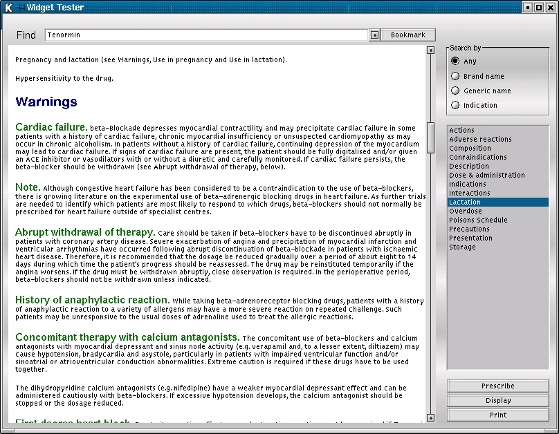
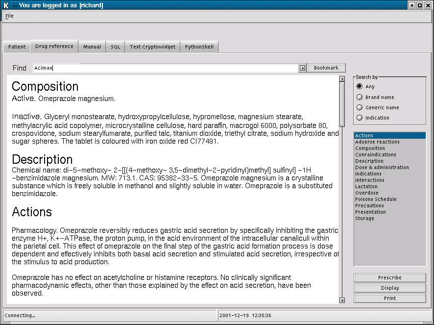

The Pharmaceutical Reference Browser allows you to search your drug reference database. In Australia, we are currently trying to negotiate with MIMS to license their well maintained drug and interactions database. We do not know yet whether we will succeed, as they seem to be extremely reluctant to get involved with anything openly sourced.
However, Richard Terry has already started on the user interface and database import of this particular data set, and here you can see some screenshots with the results of his effort:

